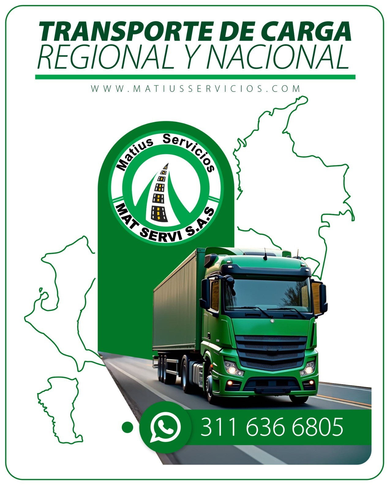

¿Quiénes somos?


Somos
MATIUS SERVICIOS S.A.S
MATIUS SERVICIOS S.A.S es una empresa de soluciones de transporte de carga a nivel nacional y de logística complementaria de alta experiencia en el mercado. Su sede está ubicada en el municipio de Apartadó Antioquia, teniendo como eje y campo de acción principal la región de Urabá y ciudades capitales del país.
Somos una extensión de los equipos de trabajo de los clientes, y unimos nuestra experiencia de transporte y logística con la proyección de los objetivos y la meta empresarial.
La empresa cuenta con flota de vehículos propios e incorpora terceros para mantener activa la integración de la cadena logística de bienes, mercancías y suministros, obteniendo reconocimiento en el mercado regional y nacional por el profesionalismo, la honestidad y la responsabilidad en su servicio.
Desde lo normativo y legal se tiene la habilitación del Ministerio de Transporte Nacional, y toda la reglamentación colombiana en materia de tránsito, transporte y movilidad segura.
Misión
Brindar a nuestros clientes un servicio de transporte de carga de alta calidad y seguridad, satisfaciendo sus necesidades con una asistencia competitiva y oportuna, y promoviendo la mejora continua.
Visión
Ser una empresa de transporte reconocida a nivel nacional por la calidad y cumplimiento en el servicio, y por los valores éticos de nuestro equipo, logrando un alto crecimiento mediante el trabajo en equipo y liderazgo en el sector.
